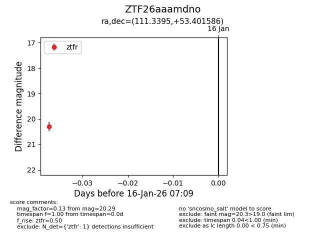
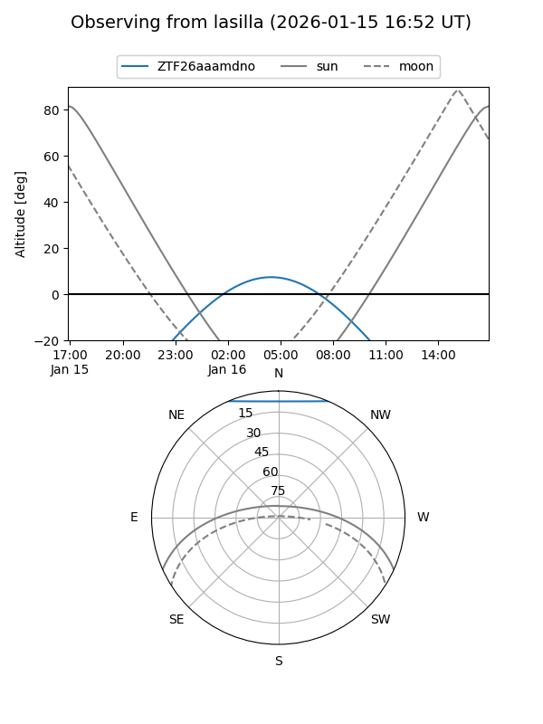
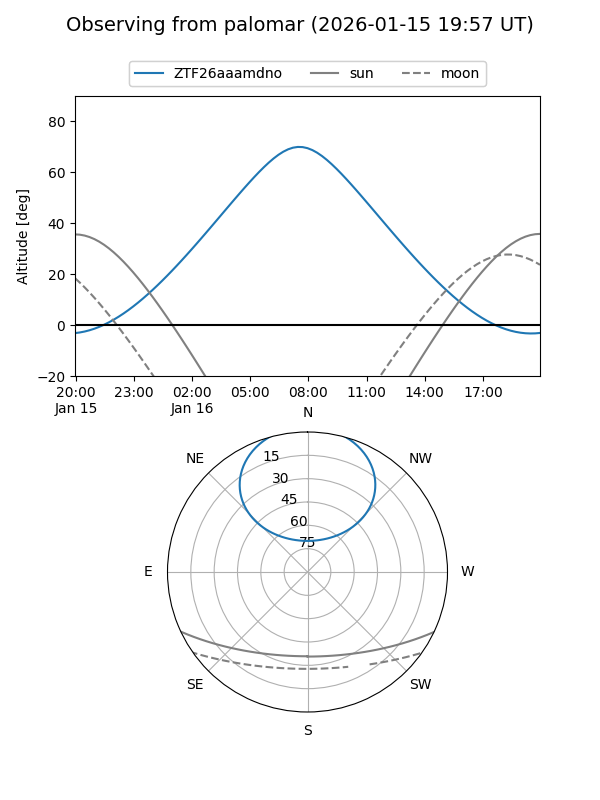

ZTF26aaamdno
Target ZTF26aaamdno at 2026-01-16 07:10
Aliases and brokers:
FINK: link
Lasair: link
ALeRCE: link
alt names
ZTF26aaamdno (ztf,fink_ztf)
Coordinates:
equatorial (ra, dec) = 111.3395,+53.40159
equatorial (HMS+DMS) = 07:25:21.49,+53:24:05.71
galactic (l, b) = (164.0969,+26.38024)
Flags:
Photometry:
last ztfr=20.29
1 ztfr detections
Lightcurve

Visibility


Additional plots